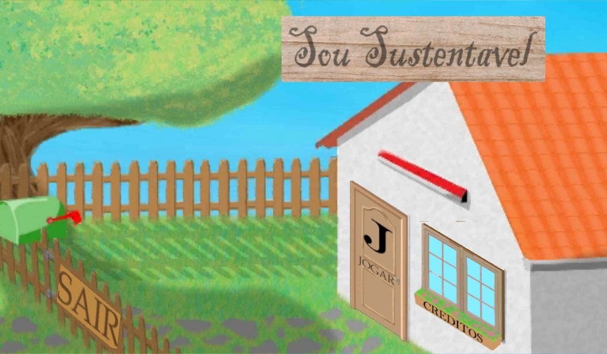
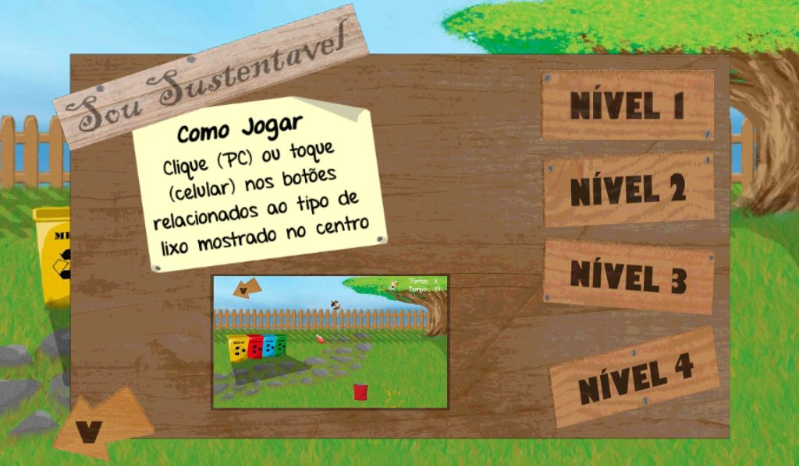
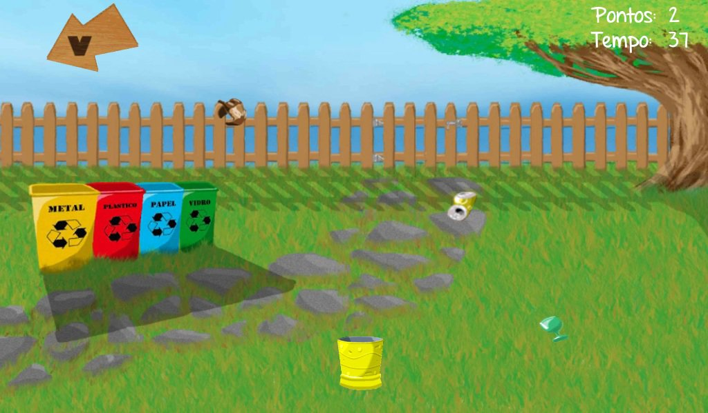
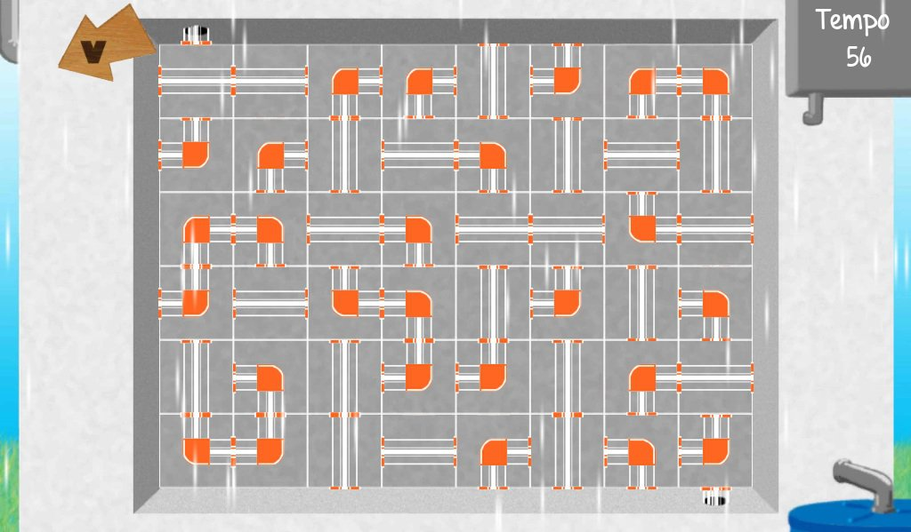
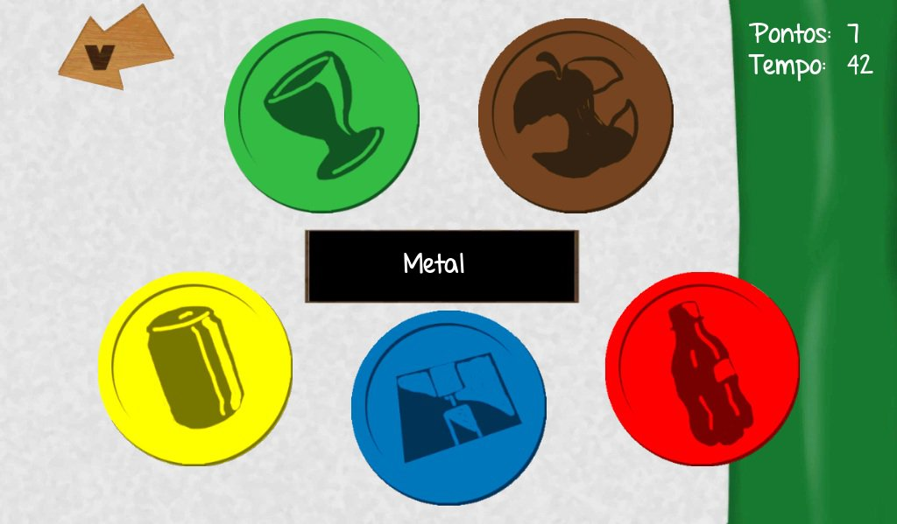

Mais um postmortem de um jogo produzido por desenvolvedores independentes no Brasil, desta vez vamos conhecer o que deu certo e o que deu errado durante a criação do jogo Sou Sustentável, desenvolvido pelo Okamoto Game Productions.
O jogo, desenvolvido com a game engine Unity 3D, possui três mini-games diferentes, todos com temática de sustentabilidade. O postmortem abaixo, escrito pelo Maurílio Eudes Okamoto, mostra as dificuldades e problemas e os pontos positivos da experiência de criar um jogo do zero até o fim.
Postmortem: Sou Sustentável

1. Descrição do Jogo
Sou Sustentável é um jogo para as plataformas Android, WebPlayer e Windows (PC). É um jogo educativo com o tema sobre sustentabilidade. Possui 3 minijogos, com fácil aprendizado e englobam conhecimento e situações que envolvam o tema sustentabilidade. O primeiro minijogo, é para coletar os lixos recicláveis, onde o jogador controla uma lixeira. O segundo é sobre reaproveitamento de água da chuva, onde o jogador precisa ligar os canos para formar a tubulação que irá levar a água da chuva da calha para uma cisterna. E o terceiro minijogo envolve reflexos, o nome de um tipo de lixo reciclável irá aparecer na tela e o jogador precisa apertar o botão referente a aquele tipo de lixo.

2. Dificuldades e Problemas
1) Pouco Empenho de Alguns Membros da Equipe
Dos 5 membros da equipe, dois deles eu conheci pela internet e outros dois eram amigos de vários anos. O interessante desse projeto é que deixou bem claro para mim, algo que um grande amigo meu dizia “Trabalho e amizade são coisas diferentes.” depois disso venho passando essa frase para as pessoas. Pois vejo muita gente levando um problema de trabalho/projeto para o lado pessoal e perdendo amizades. E ter mais cuidado em criar a equipe, bons amigos não quer dizer que vão ser bom desenvolvedores.2) Arte Gráfica
O Graphic Designer sabe bem desenhar no papel, mas no computador “dava para o gasto”, mas a arte não ficou ruim. O grande problema da arte era o tamanho em bytes que as imagens ficavam. Outro problema enfrentado por ele foi a falta de conhecimento em ferramentas gráficas, isso fez com que a criação das imagens demorassem muito mais.
3) Bugs e Problemas de Implementação
Felizmente (ou infelizmente) houveram poucos problemas no fim do projeto. Os dois maiores problemas foram de desempenho, na qual causa lentidão (lag) em alguns aparelhos Android no primeiro minijogo. Outro problema foi com a chave da versão Android, que fez com que não conseguíssemos colocar o jogo no Google Play. Um outro problema considerável foi a qualidade das imagens no jogo, como elas eram naturalmente pesadas, nós tivemos que comprimir mais piorando bastante a qualidade inicial delas.3. Pontos Positivos
1) Arte Sonora
Em questão de músicas e efeitos sonoros, o Sound Designer do grupo fez um ótimo trabalho. As músicas e efeitos sonoros combinavam bem com o estilo do jogo, com cada minijogo. Foi um ponto positivo bem considerável, mas houve alguns improvisos.
2) Aprendizado de Novas Ferramentas e Tecnologias
Esse projeto foi focado para o aprendizado da game engine Unity 3D usando Javascript. E foi justamente isso o que eu aprendi nesse projeto, desenvolvimento de jogos no Unity 3D com Javascript. Também aprendi mais sobre a criação de um Game Design Document (GDD), que abrangeu a área de Game Design e Level Design.3) Ganho de Experiência em Diversas Áreas
Esse foi o segundo projeto de jogo que eu desenvolvi, ao contrário do primeiro que eu fui um participante mediano na equipe. Nesse projeto eu fui o que mais participou, apesar da pouca participação de alguns membros, a experiência que adquiri em um único projeto foi bem considerável.
Foi a primeira vez que fui gerente de projeto e de equipe, foi o primeiro GDD que fiz que saiu do papel. Também foi a primeira vez que fui um Lead Programmer, programação é algo que sempre tive dificuldade.4) Satisfação Pessoal
Além dos fatores já citados, foi bem bacana trabalhar com pessoas inicialmente desconhecidas e o projeto fluir bem e terminar. Foi bastante divertido aprender a desenvolver no Unity 3D, antes disso só havia mexido em Android sem game engine. É tudo mais fácil e flui melhor, fora a economia de tempo que isso deu. O projeto demoraria pelo menos 5 vezes mais sem o Unity 3D, ou no pior caso ele nem sairia do papel.
Resumidamente foi muito bom pelo aprendizado e experiência. Não menos importante é o segundo jogo que criei e foi o primeiro que eu projetei e gerenciei sozinho. Afinal uma das melhores sensações para um desenvolvedor de jogos é terminar um jogo, mesmo se for simples e feio.
Download do Sou Sustentável: http://okamotoprojects.wix.com/site#!sou-sustentavel/cz1
E para terminar obrigado ao Bruno Cicanci pela oportunidade de postagem do meu primeiro postmortem. E obrigado a todos que leram o/
Maurílio Eudes Okamoto
Obrigado por compartilhar sua experiência Maurílio, e parabéns pelo jogo! Lembrando que os postmortems publicados são escritos pelos desenvolvedores do jogo, contando as coisas que deram certo e que deram errado durante a produção do game. Se você também produziu um jogo e quer compartilhar com os leitores, entre em contato comigo pelo email que está na seção contato.